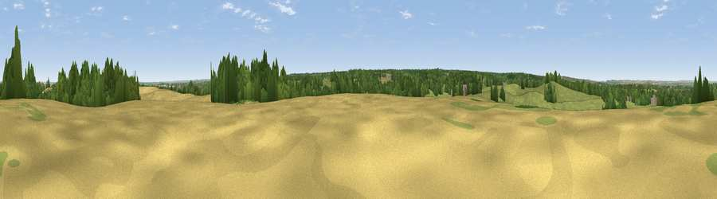

Viewpoint near Newington
#29031 in England · top 28% of its area beats it · near Newington · path 153 mWhere it is
The exact computed spot (TQ 86425 63925). Click the marker for map links.
Public access: the nearest public right of way is about 153 m away — the final stretch may cross private land. Computed from Natural England's CRoW access layer and OpenStreetMap rights of way — not the legal definitive map. Always verify locally.
The view, rendered

A 360° render of this exact spot computed from the terrain model, tree cover and land cover — summer colours, afternoon light, calibrated against photographs of famous viewpoints. Real trees, hedges and buildings will differ in detail.
The panorama
Grey silhouette: terrain skyline in each direction (720 bearings, Earth curvature and refraction included). Dashed green: skyline with trees (+15 m) and buildings (+8 m) as obstacles. Blue strip: how far the ground is visible on each bearing.
Where the view opens
Wedge length = distance to the farthest visible ground on that bearing (vegetation-aware). Rings at 10, 25 and 50 km.
What fills the view
39% grassland · 33% cropland · 22% woodland · 5% built-up · 2% water
Angular shares of the visible panorama (visual magnitude), not map area. Landscape diversity 0.56 (0–1 Shannon).
Key numbers
More beautiful places nearby
The staircase of upgrades: each row has a higher view potential than everything closer. Driving times are estimates from straight-line distance, calibrated against real road routing — check an actual route before setting out.
| Place | Direction | Drive | Score |
|---|---|---|---|
| Viewpoint near Newington | W · 1 km | ~3 min | 48.0 |
| Viewpoint near Lower Halstow | NNE · 2 km | ~6 min | 57.8 |
| Callum Hill | NNE · 3 km | ~7 min | 59.5 |
| Viewpoint near Thurnham | SW · 8 km | ~15 min | 63.4 |
| Viewpoint near Charing | SSE · 16 km | ~28 min | 68.6 |
| Viewpoint near Westwell | SE · 20 km | ~33 min | 72.2 |
| Viewpoint near Lympne | SE · 37 km | ~56 min | 72.6 |
| Tolsford Hill | SE · 39 km | ~58 min | 77.9 |
51.34383, 0.67536 · source: screening · position refined by local search. Computed location — check access rights before visiting.